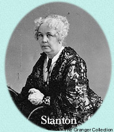

|
 Lucretia Mott and Elizabeth Cady Stanton were the chief organizers of the first Women's Rights Convention, held on July 19 and 20, 1848, here in Seneca Falls. The delegates to this convention adopted a Declaration of Sentiments, which called for women to receive "all the rights and privileges which belong to them as citizens of the United States." Among these rights, they insist, are better educational and job opportunities and suffrage.Lucretia Mott, born in 1793, is a Quaker minister who also has championed other reform causes, including temperance, peace, and the abolition of slavery. Elizabeth Cady Stanton, who uses her first and maiden names in addition to her married name, was born in 1815. She, too, has worked for temperance and the abolition of slavery.
Q. When did you become aware that women are considered inferior to men? ECS:When I was 10, my older brother died. My father was inconsolable at the loss of his only surviving son. I determined to fill the void in my father's life by becoming as learned and courageous as any young man. I studied Greek, mathematics, law, and philosophy, and became a good athlete and rider. But no matter what I achieved, my father's only response was deep regret that I was not a boy. Q. Was there a particular event that convinced you of the need for a movement to achieve equal rights for women? LM: In 1840 I was a delegate to the World Anti-Slavery Convention in London, where I met Mrs. Stanton, who had accompanied her husband, also a delegate. Because I was a woman, I was not allowed to participate in the convention. Women had to listen to the proceedings silently from a separate gallery. ECS: We then determined that once back in the United States, we would hold a convention and start a society to work for equal rights for women. Q. Whose idea was it to model the convention's Declaration of Sentiments after the Declaration of Independence? ECS: It was my idea. The Declaration of Independence leaves out the female half of the human race, and that must be changed. I revised its most hallowed words to "all men and women are created equal." I also replaced the 18 charges of tyranny against King George III with ones enumerating men's offenses against women, including compelling them to submit to laws in which they have had no say, making married women civilly dead in the eyes of the law, and barring women from almost all profitable employments. Q. Is it true members of the convention disagreed about including woman suffrage as one of the resolutions they endorsed? LM: That is correct. When Mrs. Stanton proposed it, I myself told her I feared such a radical idea would make the convention look ridiculous. ECS: The right to vote is so essential to true equality for women that I was determined that it be included in the resolutions. There was a great outcry against it in the convention, for many believed so absurd a demand would doom our cause. But that great friend of liberty and equality for all people, Frederick Douglass, spoke so persuasively in support of it that the resolution on woman suffrage was approved by a narrow majority. Q. What has been the response to your convention in the press? LM: All but a few newspapers have attacked it-and us-with vicious hysteria. One newspaper said it was "the most shocking and unnatural incident ever recorded in the history of womanity." We have been called "sour old maids," "childless women," and "divorced wives," all of which are lies. ECS: But at least this coverage, false and malicious as it is, has ensured that our cause will not wither away for lack of attention! |
|